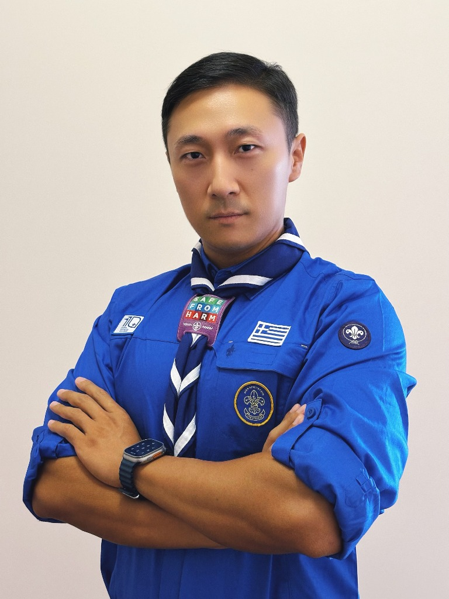

国际童军与女童军联谊会（International Scout and Guide Fellowship）Central Branch 唯一的中国成员，直接掌握国际童军网络多边沟通的核心决策通道。
The sole Chinese member of the ISGF Central Branch, establishing a highly exclusive channel of communication and influence within the global scouting community.
中国目前唯一拥有国际在册身份的 Scouter（资深童军领袖），是打通大中华区文旅、营地资源与海外顶级组织深度互信的唯一合作节点。
The only internationally registered Scouter (Scout Leader) in China, functioning as the foundational hub for global experiential learning and youth exchanges.
独家代理 Rising Star、ASF 决赛、YES 营地、ASLC 会议及 ORBIT-C 创客营。项目具备极其强大的流量导入及外事交往价值，每次活动能带领10至20多个国家的青年造访指定主办国开展青年峰会。2028年，项目确定首次走出亚太区，落地欧洲的意大利。
Exclusive Greater China Agent for the YA Platform (Rising Star, ASF, YES, ASLC, ORBIT-C). Built as a high-volume mobility platform, **regularly mobilizing youth delegations from 10 to 20+ countries** for international summits. In 2028, the platform will expand outside the Asia-Pacific for the first time, hosting its next global event in **Italy**.
作为核心发起人及执行领袖，主导世界童军授权商品全球运营。本人是项目核心合伙人公司——英国 NG Terminal Ltd. 的合伙人，通过该公司主体承接全球仓储、税务合规，并深度掌控国内优质制造供应链资源，实现跨境 IP 商业的闭环运作。
Co-founder and lead executive directing global commerce for licensed World Scouting products. **Partner at the UK-based entity NG Terminal Ltd.**, combining international trade compliance, UK-based warehousing, and domestic Chinese manufacturing to create a seamless e-commerce supply chain.
正式注册于联合国经社部可持续发展平台项目（#SDGAction58497）。以黄河试点的生态水教育及大河流域对话为基础，制定青年大使、水利工程遗产、全球影像报告等8大交付标准，打通国际官方治理资源。
An officially registered SDG initiative on the United Nations DESA SDG Actions Platform (#SDGAction58497). Managing 8 deliverables (D1-D8) surrounding ecological water heritage and youth leadership dialogues, linking UN targets to regional government initiatives.
担任香港河南总商会国际研学委员会主席，策划两地青年双向交流。同时担任河南大公科技有限公司 CEO，作为香港大公文汇传媒集团在河南的官方代理执行公司，全权管理集团在豫的官方媒体外宣、资源整合及科技项目。
President of the HKHNCC International Study Tour Committee, developing bi-directional student mobility. Also serving as CEO of Henan Dagong Tech, the official executing partner for Hong Kong Ta Kung Wen Wei Media Group in Henan, managing media publicity, government relations, and tech programs.
作为香港大公文汇传媒集团在河南的官方代理执行实体，主导集团在河南省的官方媒体宣推、外商投资对接、大型文化项目实施及商业科技落地运营。
Leading branding, official relations, and business-technology programs in Henan for Hong Kong Ta Kung Wen Wei Media Group as its regional agency execution partner.
自主创立豫教营地教育品牌，主导高含金量青少年 PBL 研学课程顶层研发与规模化营地基地运营，打通覆盖全省的学校及渠道网络。
Founded Yujiao Camp, leading high-standard experiential learning camp designs, local school contracts, and overseeing operations across camp networks.
切入青少年社会实践与素质培训领域，从基层人力资源（HR）逐步成长为集团项目的核心策划人与大区项目总监，最终担纲总经理，统筹管理大型校外实践与培训项目，实现数万名学生的课程运营与服务网络落地。
Developed early foundations in non-school youth practice training. Advanced from HR to Planning Lead and General Manager, managing large-scale out-of-school practice programs.
精通主流大语言模型、Claude Code、Codex 及 Antigravity 等多模态 Agent 协同工具。在生图、PPT美化、文案策划与网页UI设计上具备全栈级 AI 生产力；在有预算支持的前提下，可主导完成视频流的 AI 自动化生成与落地。
Advanced proficiency in LLMs, Claude Code, Codex, and multi-agent systems like Antigravity. Capable of driving full-stack AI-driven content generation, strategic copywriting, and interactive UI/UX prototyping, alongside managing automated AI video production cycles.
得益于长期的高管及企业 CEO 角色，具备卓越的项目顶层设计与“从零到一”策划力。拒绝平庸的文案起草，而是从商业闭环、资本架构、多边资源匹配上进行顶层规划，确保项目从概念迅速转化为可执行成果。
Rooted in extensive senior executive and CEO experiences, possessing superior strategic design and 0-to-1 project incubation capacities. Transcending conventional content execution to architect robust commercial loops, capital structures, and multi-dimensional resource mapping.
手握专业的跨境运营与物流电商团队，完美承接全球仓储与跨境分销通路。作为英国合伙公司的合伙人，在多边合规商贸、全球货运与供应链调配中具备稳健的实体支撑。
Backed by robust infrastructure as a UK-entity partner, mastering compliant global warehousing and cross-border distribution networks to ensure secure, resilient physical supply chains.
自 2009 年起深耕校外实践培训，对营地建设、研学课程开发及大型社会实践活动的组织架构有深刻行业积淀与实操方法论。
Commanding nearly two decades of deep-rooted expertise in experiential education and non-school youth practice since 2009, with proven execution in camp design and large-scale youth activity operations.
直接对接联合国经社部（UN DESA）、世界童军组织（WOSM）等全球治理网络，独家垄断大中华区各省市核心教育及景区对接端，构建无法逾越的项目准入门槛。
Direct access to intergovernmental networks such as UN DESA and WOSM, securing high-barrier institutional access across Greater China’s regional education sectors and premier cultural landmarks.
作为具有国际在册身份的 Scouter 及 ISGF 中央分会中国代表，个人认知与渠道深度国际化。能够突破本土思维壁垒，在跨文化和全球治理背景中开展多边合作。
Leveraging credentials as an internationally registered Scouter and ISGF Central Branch representative to bridge localized insights with global governance frameworks and drive multi-lateral cooperation.